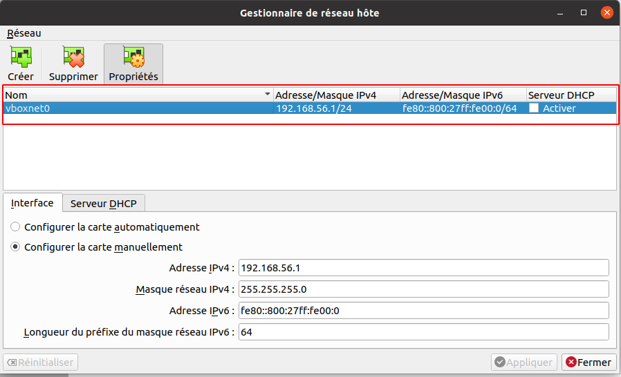
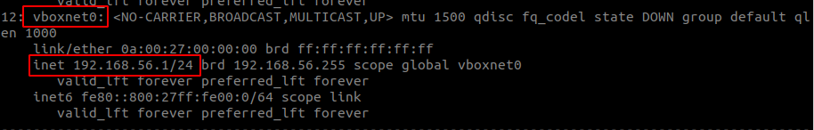
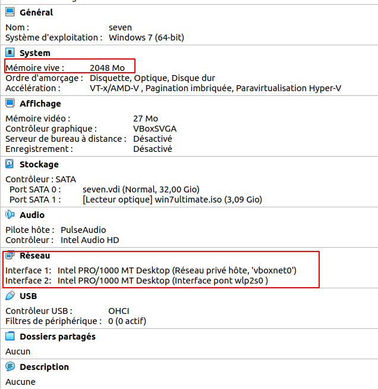
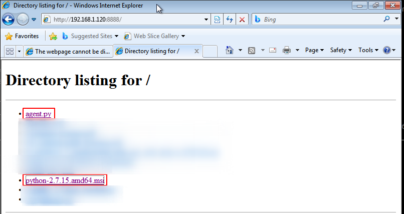
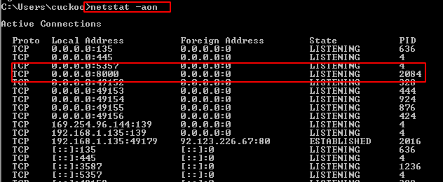
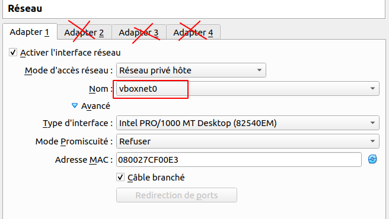
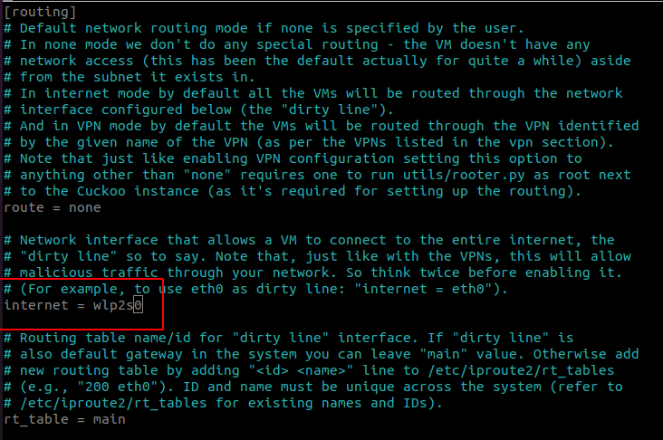

Adrien
Sunday, July 19, 2020
Cuckoo sandbox install
EDIT - 03/03/202021 : I upgrade the Windows 7 install for a Windows 10.
Hello! it’s been a while since I’ve done a little tutorial on my blog!
Today we’re going to see how to install and configure cuckoo sandbox for dynamic analysis on a Windows 10 machine!
INFO : I made this tutorial on a Ubuntu 20.04 updated machine and virtualbox 6.1. You may have version problems depending on the packages you are going to install.
Before continuing
Before continuing, please be aware that cuckoo’s technical documentation is very complete and can help you in case of problems. I’m not an expert, in case of bad configuration and “destruction” of your environment, I can’t be held responsible.
This tutorial is primarily here to serve as notes and not to spend 1 week in the cuckoo documentation.
Well, let’s get on with it!
User
For this tutorial I created a user cuckoo with sudo rights to download the packages.
I logged into his session to do the whole installation with it.
Feel free to change the cuckoo user with your current user.
sudo useradd cuckoo
sudo usermod -a -G vboxusers cuckoo
sudo usermod -aG sudo cuckoo
Also remember to put the user in the vboxusers group so that he has the rights to use VMs.
Installing packages
There are a lot of them, here is all you need to install before continuing.
sudo apt update
sudo apt upgrade
sudo apt install python python3-pip python-dev libffi-dev libssl-dev
sudo apt install python-setuptools
pip3 install virtualenv
sudo apt install libjpeg-dev zlib1g-dev swig
sudo apt install mongodb
sudo apt install postgresql libpq-dev
sudo apt install virtualbox
sudo apt install tcpdump apparmor-utils
sudo apt install m2crypto
Virtualbox - vboxnet0
Normally you should have the latest version of virtualbox, remember to create a host private network in the virtualbox settings and leave it as default.

Here is what your interface should look like:

TCPDUMP
Now we need to configure tcpdump.
By default it is only executable by an administrator account but it must be executable by our user without privilege elevation (sudo).
Otherwise, it’s impossible to run a network scan with cuckoo.
sudo groupadd pcap
sudo usermod -a -G pcap cuckoo
sudo chgrp pcap /usr/sbin/tcpdump
sudo setcap cap_net_raw,cap_net_admin=eip /usr/sbin/tcpdump
sudo aa-disable /usr/sbin/tcpdump
To check if everything is working properly you can run :
getcap /usr/sbin/tcpdump
Or just run tcpdump with your user and see if it runs without admin rights.
TIPS: If you want another user to be able to run tcpdump without administrator rights, simply add him to the pcap group.
Cuckoo
env python
Before installing cuckoo, you need to create a python2.7 environment because cuckoo only supports python2 (yes that sucks).
For our environment, we’ll do it with virtualenv :
virtualenv -p /usr/bin/python2.7 cuckoo-env
To activate your env-python and work on it, just run :
source cuckoo-env/bin/activate
Troubleshooting
If you ever have problems with virtualenv reinstall it :
sudo apt remove virtualenv
sudo apt install virtualenv
Installation of Cuckoo
Now we are ready to install Cuckoo in our env-python2.7:
pip install setutools
pip install -U cuckoo
Check if all cuckoo libraries have been installed without errors.
Start your first cuckoo initialization with the command :
cuckoo init
If everything works well, it shows you the path to the cuckoo configuration files.
In my case, it’ s in /home/cuckoo/.cuckoo.
Virtual Machine Windows 10
Cuckoo is installed, we are now going to create our virtual machine under Windows 10.
Before I manually installed my VM with virtualbox, I had done it with vmcloak but unfortunately it’s no longer compatible with virtualbox-6.1 so we’ll do it differently !
Creating the VM
Nothing exceptional here, just install your VM as you would normally do on virtualbox.
TIPS: I recommend that you give it 2 cores in CPU and 2GB in RAM because later you will have the possibility to make a DUMP of the RAM and analyze it with volatility and I can assure you that a 2GB memory dump is easier to analyze than an 8GB memory dump!
Counter-Tips: If you are not interested by the forensic analysis, just put all the RAM that you want !
For the network card of the machine, you have to assign the vboxnet0 card, the one we created at the very beginning of the tutorial and a bridge access card.

VM Configuration
Once your Windows 10 system is installed, you need to configure it and install various software.
For now, you can have an internet access.
Here are the tools to install :
- Python2.7 Not Python3 !!
- adobepdf
- Office
- pillow (
C:\Python27\python.exe -m pip install Pillowused for the screenshot)
Installation of the cuckoo agent
It is important to install the cuckoo agent that will be used to control the GUEST machine (windows 10).
It is a python script found in the configuration files .cuckoo/agent/agent.py.
Transfer the python script to the GUEST, change the file extension like agent.pyw and execute it with administrator rights.
To do that, just open cmd.exe with the Admin rights and then :
C:\Python27\pythonw.exe C:\Users\cuckoo\Downloads\agent.pyw
TIPS: If you want to transfer the file from your host to your VM, you can use a Python web server ! To create a simple web server, you can se python, just run this command into the folder that contains all the files you want to share :
python3 -m http.server 8888
Now you can access this server using your browser and type the ip and the port :

To check if the script has executed correctly, open the cmd.exe and type :
netstat -aon

If you see an open port on 0.0.0.0:8000 then the script has executed correctly.
TIPS 2: To make the script run without the terminal, change the extension to agent.pyw.
! newtask
{kind=link}
Snapshot
Once your installation is complete and everythig is working like a charm, shutdown you VM and remove the bridge network !.
For security reasons, it is necessary to set up a virtual network so that the malwares you are going to run on your sandbox cannot communicate with the machines on your home network! Remove the other network cards and keep vboxnet0, then turn your machine back on and once on the desktop, make your snapshot.

Once you machine is up and your on the desktop, start the cuckoo agent with admin right and take a snapshot !
Cuckoo Configuration
Now that our machine is ready, we’ll set up cuckoo.
We start by downloading the community plugins with the following command:
cuckoo community
Once that’s done we can start our configuration.
virtualbox.conf
Since we are using virtualbox, we need to modify the .cuckoo/conf/virtualbox.conf file.
This file will contain the configuration of our machine, I’ll show you the parameters to modify :
[virtualbox]
# headless allows not to display the VM
# If you want to display your machine and see the actions that are performed, I advise you to use the option gui
mode = gui
path = /usr/bin/VBoxManage
interface = vboxnet0
# You can place multiple machines, here cuckoo1 is the identifier of the vm configured below in the [cuckoo1] section file,
# If you add another machine, add a cuckoo2 and copy/paste the configuration below and rename it [cuckoo2].
machines = cuckoo1
controlports = 5000-5050
[cuckoo1]
# VM name
label = windows10
platform = windows
# Its ip address, if you did not touch the configuration of vboxnet0, it does not change and remains in 192.168.56.101
ip = 192.168.56.101
# snapshot name
snapshot = origin
# For the rest of the file just keep the default configuration.
VirusTotal
By default, the VirusTotal addon is disable. This option is used to analyse the file that you drop into your VM for a Static analysis.
If you want to anable this option, go to .cuckoo/conf/processing.conf and change the enabled = yes into the [virustotal] section.
WARNING : Cuckoo will send the file using the public API of VirusTotal, that means all the file will be accessible by everybody. Don’t use VirusTotal to analyse a confidential file.
Network configuration
As you can see, our machine currently has no internet connection on the vboxnet0 card, we will set up a redirection so that it can access the internet.
In my case, the main network card of my host (the wi-fi interface) is called wlp2s0, change it if necessary.
sudo sysctl -w net.ipv4.conf.vboxnet0.forwarding=1
sudo sysctl -w net.ipv4.conf.wlp2s0.forwarding=1
sudo iptables -t nat -A POSTROUTING -o wlp2s0 -s 192.168.56.0/24 -j MASQUERADE
sudo iptables -P FORWARD DROP
sudo iptables -A FORWARD -m state --state RELATED,ESTABLISHED -j ACCEPT
sudo iptables -A FORWARD -s 192.168.56.0/24 -j ACCEPT
Now your machine will have internet access even on the vboxnet0 card.
Routing cuckoo
You need to enable cuckoo’s routing for internet access & traffic analysis.
To do this, just modify the .cuckoo/conf/routing.conf file and in the internet option put the name of your network card, here I’ll put wlp2s0.

Mongodb
To activate cuckoo’s web interface, you need to enable mongodb.
Go to the .cuckoo/conf/reporting.conf file on line 45 in the mongodb section and pass the enabled option to yes :
enabled = yes
Fingers crossed
Now that everything is set up, all we have to do is cross our fingers and run cuckoo!
To start cuckoo, you will need 3 terminals that will execute the commands in this order:
Terminal 1 - routing
cuckoo rooter --sudo --group cuckoo
Terminal 2 - cuckoo
cuckoo -d
Terminal 3 - Web
cuckoo web --host 127.0.0.1 --port 8080
And there you are, normally, you should be able to access the web interface at this address http://127.0.0.1:8080!
If you ever encounter problems, look at the second terminal, the -d option allows you to display the debug mode and see what’s wrong.
If you’re stuck on an error, I advise you to look if this error hasn’t already been solved on cuckoo’s github.